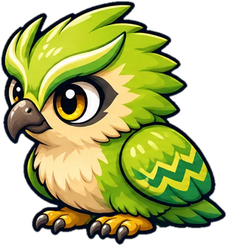

 Grass
Grass Wind
WindTap a stage to read its story.
Chiplit is a small round owl with vivid yellow-green feathers and large, luminous amber eyes that seem to absorb the dim light of the Dark Forest floor with perfect ease. Tufted ear-feathers poke upward and a wave of softer green down covers its belly. Its talons grip a twig and it swivels its head without moving its body, tracking sounds the way a satellite dish follows a signal. It hunts by sound alone on moonless nights and has never missed a target it fixed on - but it refuses to pursue anything it cannot hear perfectly.
Field note: Chiplit will tilt its head left and right exactly three times before it commits to a strike - watch for the third tilt.
Dark Forest. Chiplit and its family are found in the Dark Forest. See everyone who lives there.
Share a Bond Food that matches its types to become friends. Chiplit loves:
A Bond Food is not a trick. It joins your spirit with the Kimuro's spirit, and only when it chooses you.
Print the Kimuro adventure packs: mazes, cards, a board game and Bond Mark medals.
See the printable packs